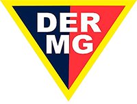
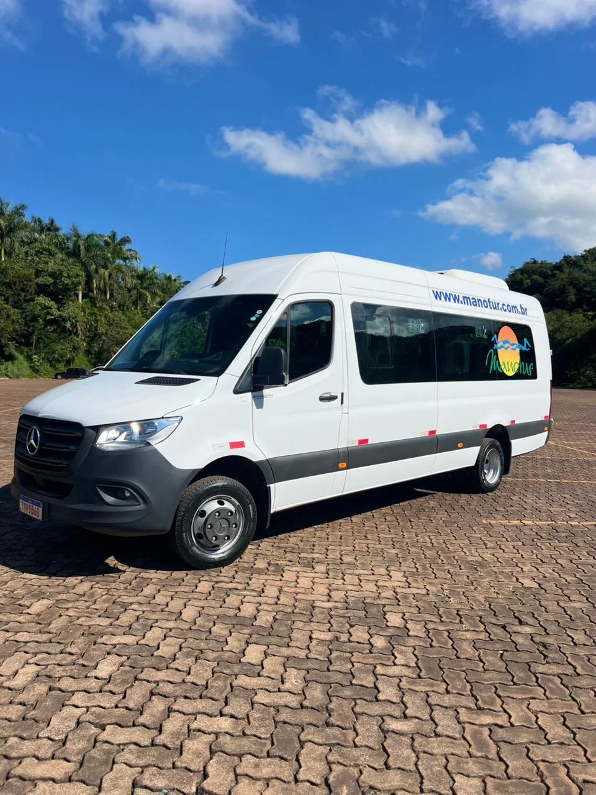
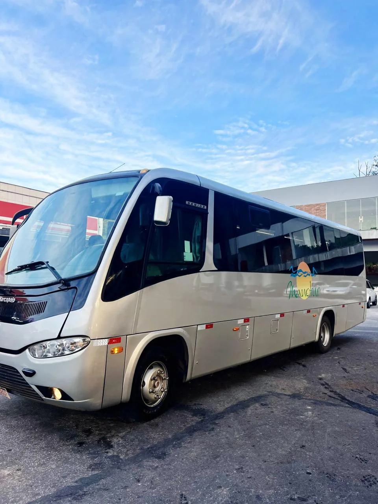
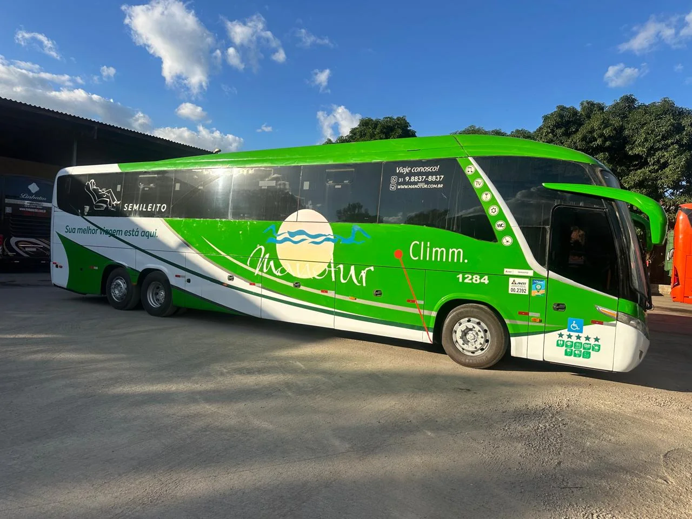
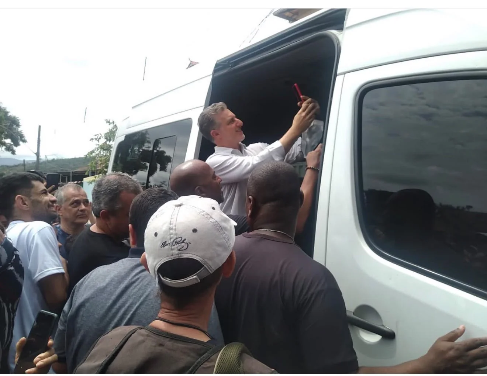

Aluguel de van em Belo Horizonte
Sua melhor viagem
começa aqui.
Aluguel de van, micro-ônibus e ônibus com frota própria, atendimento 24 horas e itinerários para todo o Brasil.
24hatendimento todos os dias
Brasilviagens em todos os estados
2008experiência desde o primeiro trecho
Empresa certificada
Viagens regulamentadas, do embarque à chegada.
Frota registrada nos órgãos competentes para oferecer transporte seguro, regularizado e responsável.

Soluções sob medida
Um transporte para cada momento.
Da reunião ao aeroporto, do casamento à estrada: cuidamos do trajeto para que seu grupo aproveite o que realmente importa.
Aluguel de van & executivo
Vans para viagens, aeroportos e deslocamentos com discrição, agilidade e cuidado para profissionais, famílias e equipes.
- Traslados e compromissos
- Artistas e bandas
- Atendimento personalizado
Empresas & equipes
Fretamento corporativo para colaboradores, congressos, feiras, treinamentos e operações especiais.
Quero este serviço →Eventos & celebrações
Logística organizada para casamentos, formaturas, shows, encontros e eventos de todos os portes.
Quero este serviço →Aeroportos
Transfer para Confins, Pampulha, Belo Horizonte e região metropolitana, com horário planejado.
Quero este serviço →Turismo & excursões
City tours, cidades históricas, Inhotim e viagens de grupos com destino a qualquer estado do Brasil.
Quero este serviço →Catálogo da frota
Do aluguel de van ao ônibus, o espaço certo para o seu grupo.
Veículos revisados, confortáveis e preparados para diferentes tipos de percurso.

Van executiva
01 / 03
Aluguel de van com agilidade e conforto.
Uma escolha versátil para aeroportos, executivos, famílias, pequenas equipes e itinerários personalizados.
- Ideal para grupos compactos
- Opções executivas
- Viagens locais e nacionais

Micro-ônibus
02 / 03
Mais espaço, mesma atenção.
Equilíbrio ideal para equipes, eventos, excursões e grupos que desejam viajar juntos com praticidade.
- Conforto em trajetos prolongados
- Embarque organizado para grupos
- Configuração conforme a viagem

Ônibus semi-leito
03 / 03
Estrada para grandes grupos.
Ônibus para viagens, fretamento, excursões, eventos e operações corporativas em todo o território nacional.
- Frota revisada e renovada
- Motoristas experientes
- Planejamento de ponta a ponta
A configuração e os itens de conforto podem variar. Nossa equipe indica o veículo ideal para cada rota.
Destinos e itinerários
Escolha a rota. A Manotur cuida do caminho.
Aluguel de van, micro-ônibus e ônibus com saída de Belo Horizonte e região para destinos em Minas Gerais e todo o Brasil.
18 itinerários · 8 cidades históricas
Roteiro especial em Minas
Cidades Históricas
Monte um itinerário por uma ou mais cidades e viaje com seu grupo.

18anos de estrada
Nossa história
Confiança construída trecho a trecho.
A Manotur nasceu em Belo Horizonte, em 2008, para elevar o padrão do transporte de passageiros na região.
Começamos no transporte universitário e escolar. Com a confiança dos clientes, crescemos para atender empresas, eventos, turismo e viagens nacionais, sem perder a proximidade que marcou o início da nossa jornada.
Experiências especiaisLuciano Huck
Produções & artistasJefferson & Suellen
Mais que transportar, nosso compromisso é fazer cada passageiro chegar bem.
Manotur em movimento
Uma frota que já percorreu muitas histórias.
Bastidores da viagem
Veja a Manotur em movimento.
Registros reais da frota, dos embarques e dos caminhos que fazem parte da nossa história.
Frota Manotur
Experiência na estrada
Simples do início ao fim
Você conta o plano. Nós cuidamos do caminho.
-
01
Conte sua rota
Informe data, origem, destino e tamanho do grupo.
-
02
Receba a melhor opção
Nossa equipe indica o veículo adequado e prepara o orçamento.
-
03
Embarque tranquilo
Com a rota alinhada, é só aproveitar cada momento da viagem.
Antes de embarcar
Perguntas frequentes.
Se sua dúvida não estiver aqui, fale com nossa equipe. O atendimento funciona 24 horas.
Ligar agora →Vocês fazem viagens para fora de Minas Gerais?+
Sim. Atendemos viagens e excursões para qualquer estado do Brasil, conforme planejamento prévio da rota.
Como funciona o aluguel de van?+
Você informa origem, destino, data e número de passageiros. Nossa equipe considera também a bagagem e o tipo de viagem para indicar a van e preparar o orçamento ideal.
O atendimento funciona aos fins de semana?+
Sim. O atendimento da Manotur funciona 24 horas por dia, todos os dias da semana.
É possível contratar transfer para Confins?+
Sim. Realizamos transfers para o Aeroporto Internacional de Confins, Belo Horizonte e toda a região metropolitana.
Vocês atendem eventos e empresas?+
Sim. Organizamos o transporte de colaboradores, convidados, artistas e grupos para congressos, feiras, casamentos, formaturas, shows e operações corporativas.
Sua próxima rota
Vamos planejar a viagem?
Peça seu orçamento de aluguel de van, micro-ônibus ou ônibus. Ao enviar, sua solicitação será organizada e aberta diretamente no WhatsApp da Manotur.